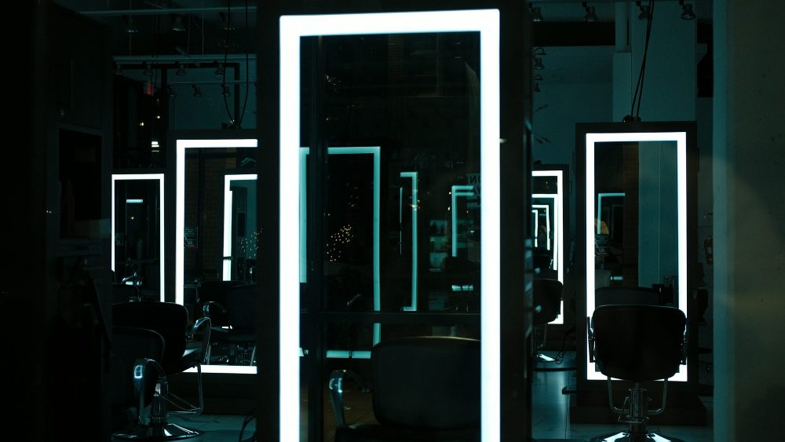
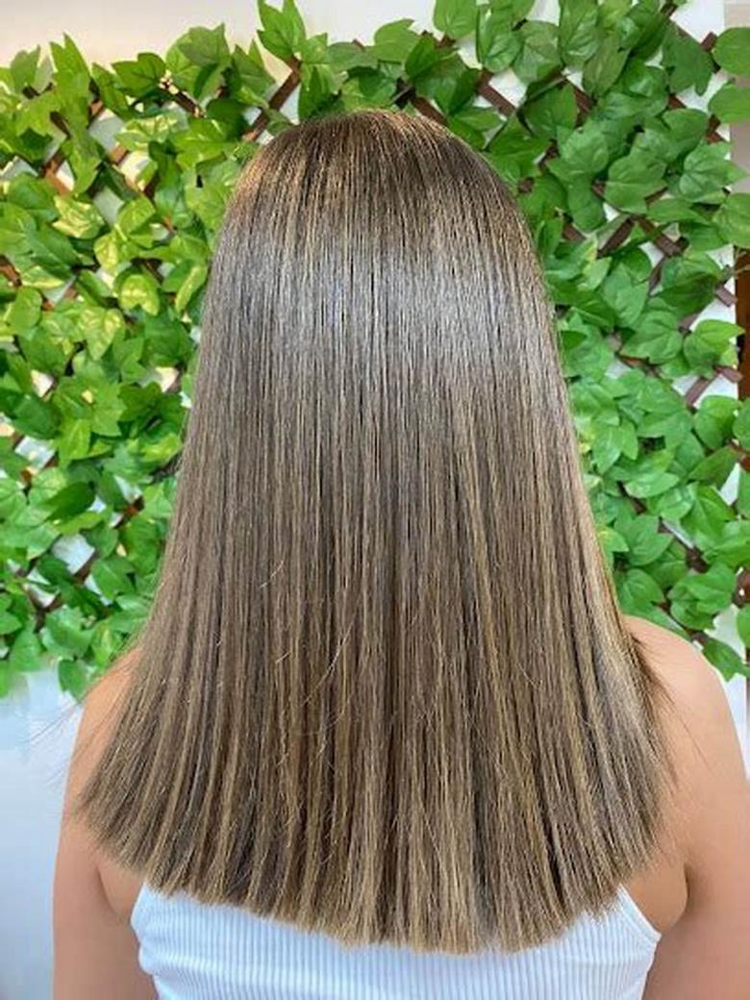
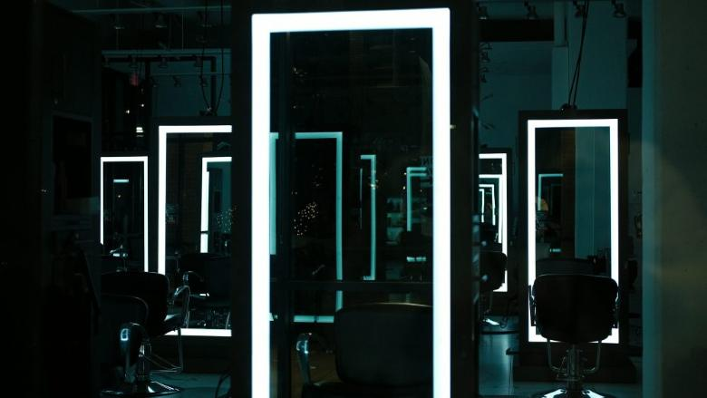
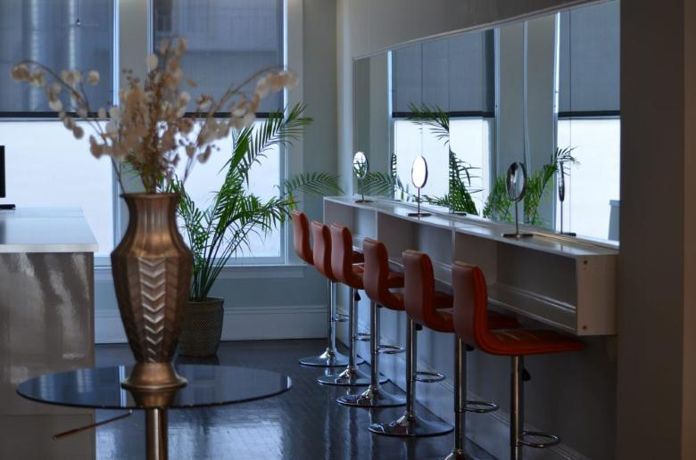
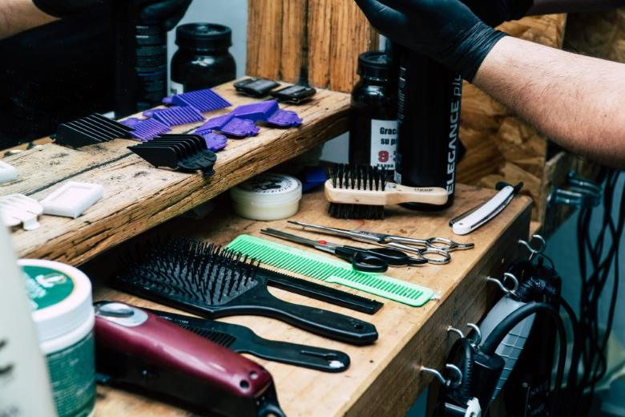
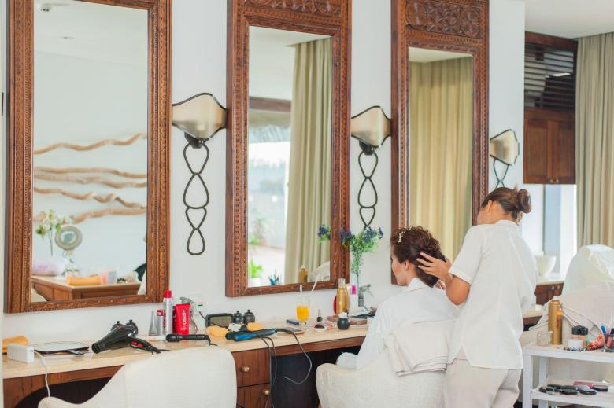

45 min
Manicure simple
Limado, cutícula y esmaltado tradicional. Lo justo para salir con las manos ordenadas.
Cabe entero en una hora de colación.
Propuesta de sitio web — preparada para Studio_handmade por CristalWeb
5,0 con 109 reseñas, y el número de reservas está escrito en el campo «dirección» de Google porque no hay dónde más ponerlo. Esta página es ese dónde.
Estudio de uñas · Pucón
La pregunta de la que tiene hora de almuerzo y no un día libre. Acá está qué se puede hacer junto y cuánto se demora cada combinación.
La carta
No todo se puede hacer junto: algunas cosas necesitan que la anterior seque, y otras se hacen mientras. Esto es lo que sí calza en una sesión.
45 min
Limado, cutícula y esmaltado tradicional. Lo justo para salir con las manos ordenadas.
Cabe entero en una hora de colación.
75 min
Sacar el permanente anterior sin dañar la uña toma su tiempo, y ese tiempo no se puede apurar: es la parte que decide cómo queda la uña abajo.
No cabe en una hora. Conviene tarde o sábado.
90 min
Se hacen entrelazados: mientras una cosa seca, se avanza la otra. Por eso juntos duran menos que sumados por separado.
El combo que más ahorra tiempo.
30 min
El relleno o el retoque a las tres semanas. Corto, y es lo que hace que el trabajo dure el doble.
falta: confirmar cada cuánto la recomiendan
Duraciones de referencia del oficio. Lo que se alcanza a hacer en su caso depende del estado de la uña y lo dice el estudio al reservar.
La única foto de trabajo que tienen
Es la foto correcta y por dos motivos: muestra el resultado —que es lo que se compra— y no muestra la cara de nadie, así que no hace falta pedir permiso para publicarla. Un salón necesita seis fotos como ésta, una por servicio, y con eso la página deja de explicar con palabras lo que se explica mejor mirando.
El nombre no es adorno
Una uña hecha a mano no se parece a una calcomanía, y no por capricho: se nota en tres cosas concretas que se pueden mirar de cerca.
Descripción general del oficio. Lo que corresponda para sus uñas lo evalúa el estudio.
Reservas por WhatsApp
9 8552 8907El mismo número que hoy está escondido en el campo «dirección» de su ficha de Google. falta: dirección real, horario y precios
Salón y barbería en la misma puerta
Y eso, en un pueblo, es media clientela más

Dos imágenes de esta página son suyas: este logo y el largo liso de más arriba. Los fondos de tijeras y salón son de banco libre y están declarados en imagenes/FUENTES.txt.
falta: seis fotos de trabajo, una por servicio, todas de espaldas o de detalle
Estas seis ya aparecen más arriba en la página. Vuelven acá en otro tamaño porque una sola pasada de imágenes deja el scroll vacío. La procedencia de cada una está en imagenes/FUENTES.txt.





El 5,0 con 109 reseñas y el número +56 9 8552 8907, que aparece en su propia ficha — escrito en el campo de la dirección.
Las cuatro combinaciones y sus duraciones: referencia general del rubro. Se reemplazan con las suyas en una conversación.
La dirección de verdad, el horario y los precios. Y fotos de trabajos suyos: en este rubro la foto es el catálogo.